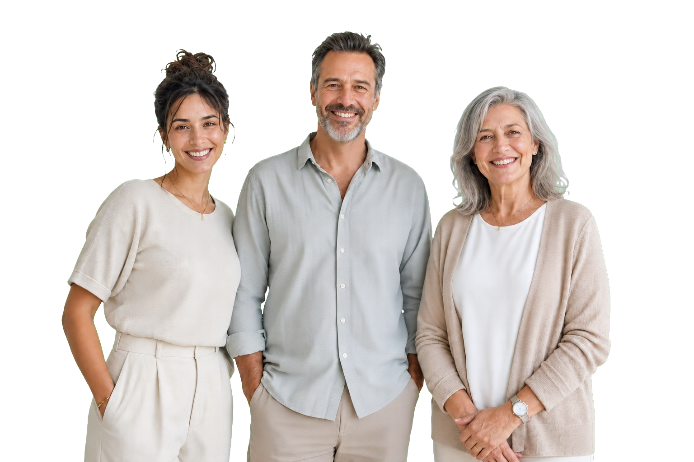
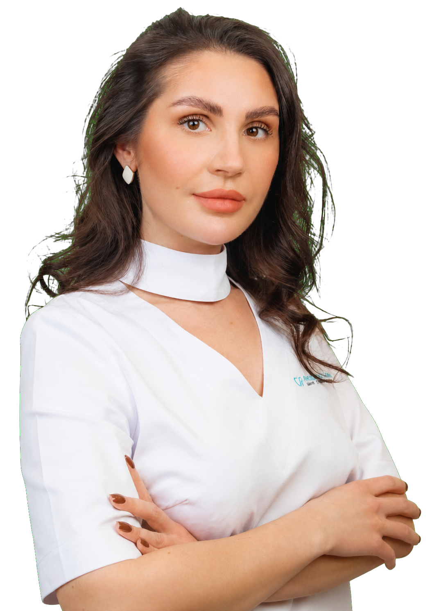
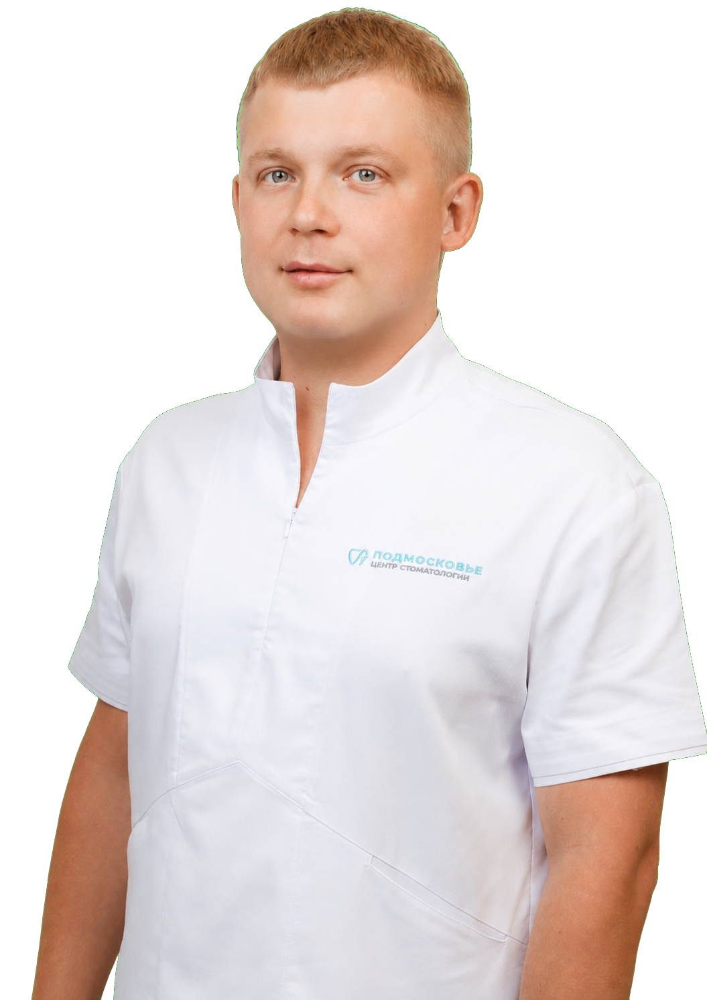
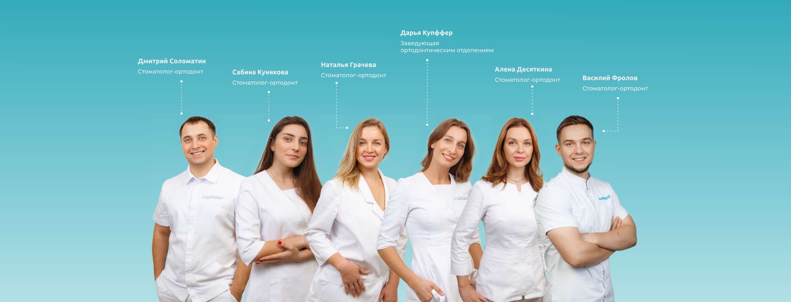
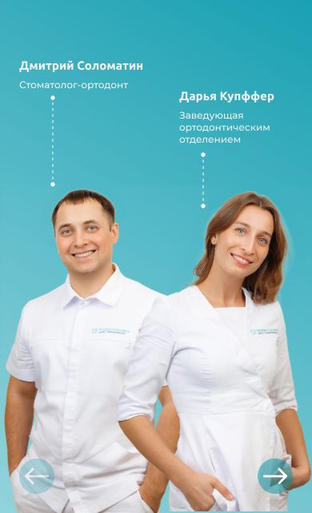
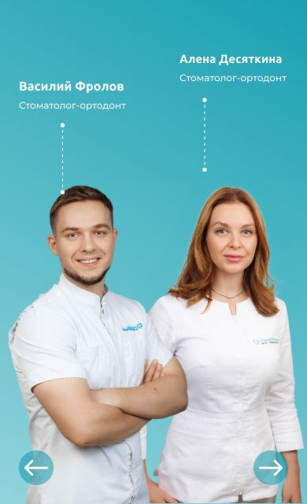
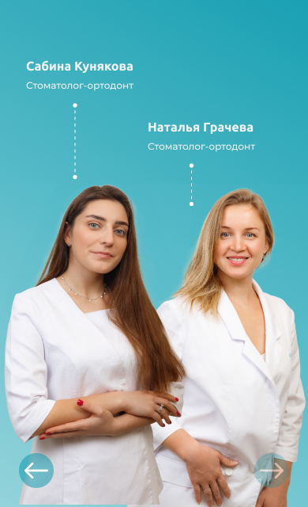
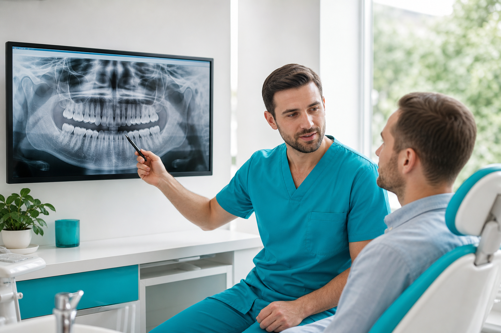
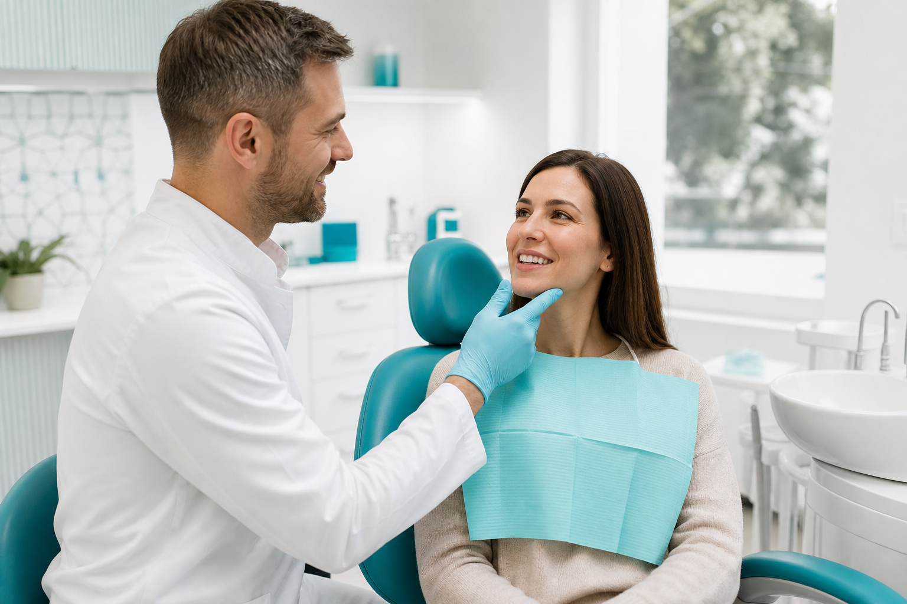

Изменить одну деталь
Когда беспокоит оттенок зубов, небольшой скол, неровный край или старая пломба.
Центр стоматологии «Подмосковье»
Профильные специалисты оценят состояние зубов,
учтут ваши пожелания и предложат понятный путь
к естественному результату.

Выберите ситуацию, которая больше всего похожа на вашу.
Нажмите на карточку, чтобы узнать о возможных решениях.
Поможем разобраться
Расскажите врачу, что именно вас беспокоит или что вы хотели бы изменить.
На консультации мы объясним возможные решения и поможем выбрать подходящий путь.

Иногда достаточно изменить одну деталь. В других случаях требуется последовательная работа нескольких специалистов.
Когда беспокоит оттенок зубов, небольшой скол, неровный край или старая пломба.
Когда хочется изменить форму или положение нескольких зубов, скорректировать прикус либо линию дёсен.
Когда зубы сильно повреждены, стёрты, отсутствуют или одновременно требуется решить несколько задач.
На консультации врач оценит состояние зубов, выслушает ваши пожелания и поможет определить, с чего лучше начать.
Реальные результаты лучше длинных описаний. Финальные кейсы подберём по трём масштабам лечения.


Процедура и срок будут указаны по реальному кейсу.
Посмотреть полную историю →

Процедура и срок будут указаны по реальному кейсу.
Посмотреть полную историю →

Процедура и срок будут указаны по реальному кейсу.
Посмотреть полную историю →Экспертный подход
При необходимости специалисты разных направлений объединяются вокруг одной задачи пациента и работают по единому плану.

Для небольшой коррекции может быть достаточно одного врача. Если задача сложнее, профильные специалисты совместно составят последовательный план лечения.




Вы всегда знаете, что происходит сейчас и каким будет следующий шаг.
Этап 1
Обсуждаем, что вас беспокоит, оцениваем исходную ситуацию и уточняем, какой результат вы хотите получить.

Этап 2
Оцениваем состояние зубов, дёсен и прикуса. При необходимости подключаем профильных специалистов.
Этап 3
Объясняем возможные решения, последовательность действий, предполагаемые сроки и стоимость.

Этап 4
Контролируем каждый этап, объясняем дальнейшие действия и помогаем сохранить результат.
Мы за честность. Здесь нет общих фраз — только понятные ответы, которые помогут принять решение.
Администратор перезвонит и согласует дату и время приёма
Специалисты, которые работают с эстетическими, ортодонтическими и восстановительными задачами.